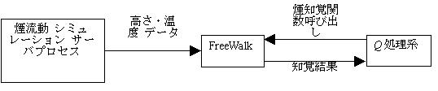

To simulate an escaping crowd in fire, we connected our virtual city space system 'FreeWalk/Q' with VR-based fire simulator 'Fire Cube' developed by the National Research Institute of Fire and Disaster. Crowd behavior is simulated by FreeWalk/Q and smoke flow is simulated by Fire Cube.
The loss of many lives are caused by smoke in an indoor fire. It is important to investigate escaping behavior and establish a guidance method that can facilitate smooth evacuation. Computer-based simulation is useful for simulating a crowd and testing a guidance method since it is costly and unsafe to use human subjects and real smoke. Conventional crowd simulators are aimed at scientific analysis and not very interactive. We need an interactive simulator which allows people to experience crowd simulation in order to confirm the effective guidance methods obtained hypothetically from non-interactive analytic simulations. A combination of FreeWalk/Q and Fire Cube enable participatory fire simulations where human subjects can experience new guidance methods (see Figure 1).
In the crowd simulations of FreeWalk/Q, each agent can socially respond to avatars controlled by users as well as other agents. FreeWalk/Q consists of the scenario description language Q in which you can describe behavioral rules easily and the interaction platform FreeWalk that execute behaviors of agents and avatars equally.

Figure 1. Participatory simulations of an escaping crowd in fire
FreeWalk's functions execute actions and perception of agents. Behavioral rules in Q are the rules to call the functions. For example, when the behavioral rule "a person proceeds toward the emergency staircase if he/she sees others rush into it" is interpreted, the Q language processor calls the function to observe other agents' behaviors. If they are going to the stairs, the processor calls the function to begin walking toward it.
The fire simulation of Fire Cube is a VR-based simulation, which can make us feel the simulated smoke physically. When virtual smoke is drawn on the large-scale stereoscopic display, real smoke made from innocuous substance is spouted out from the smoke generator. The feeling through nose and skin makes us more strained and irritated than that through only visual information. The smoke simulation server calculates the height, the temperature, and the soot density based on the 'zone model', in which each structural zone like a room, a lobby, and a passage has its own parameters. These calculated data are used for drawing and spouting smoke.
To combine simulations of FreeWalk/Q and Fire Cube, we implemented agents' capability to perceive smoke. It is known that the probability of survival can be estimated by the integration of the temperature of inhaled smoke. Hence, we made agents perceive whether they are breathing smoke or not, and its temperature. At first we connected FreeWalk with the smoke simulation server so that FreeWalk can receive the height and the temperature data. Next we added FreeWalk's function to perceive smoke. Figure 2 shows this architecture. As a result, it became possible to design agents' behaviors that are adaptive to fire simulations.

Figure 2. Connection of FreeWalk/Q to Fire Cube
Contact:
Hideyuki Nakanishi (nakanishi at i.kyoto-u.ac.jp) Dept. of Social Informatics, Kyoto University